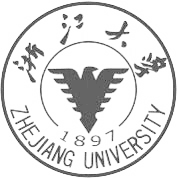

Don’t let the muggles get you down.
Focusing on NLP, CV, Applied ML, Computer Graphics, Imaging, 3D, and software development.
Passionate about entrepreneurship, product design, photography, and any "moonshot" ideas.
With hardware background in embedded system, FPGA, sensors, etc.
NEWS!
- [09/07/2020]: I updated my portfolio, check it out!
- [06/22/2020]: I started my AI Residency program at X, a moonshot factory.
- [06/14/2020]: I received my Masters' Degree from Stanford University.
EDUCATION
Stanford University
September 2018 - June 2020, Stanford CA
Master of Science in Electrical Engineering
Focusing areas: AI, Graphics, Systems
GPA: 3.8/4.0

Zhejiang University
September 2011 - June 2015, Hangzhou China
Bachelor of Science in Electronic Science and Technology
Focusing areas: Computer Engineering, Micro-electronics
GPA: 3.9/4.0
INTERESTS
- NLP, Computer Vision, Machine Learning, Data Mining
- Computer Graphics, 3D, AR/VR, Imaging, Mobile Dev, Web Dev
- Product Design, Photography
SKILLS
- Python, Java, C/C++, SQL, Shell, JavaScript, HTML, CSS, MatLab.
- Pytorch, Tensorflow, CUDA, OpenCV, GLSL, Spark, MongoDB, Git, SVN.
- VHDL, FPGA, ModelSim, MultiSim, Altium Designer9; Embedded System, ASIC desgin.
- LaTex, MarkDown, Sketch, Photoshop, Lightroom, etc.
COURSEWORKS
CS229 Machine Learning, CS224N Natural Language Processing, CS231N CNN for Computer Vision,
CS348K Visual Computing system, EE367/CS448I Computational Imaging, EE267 Virtual Reality,
CS348B Computer Graphics: Image Synthesis Techniques, PSYCH 221 Image Systems Engineering,
CS248 Interactive Computer Graphics, CS149 Parallel Computing, CS140 Operating System,
CS246 Mining Massive Data Sets, CS 341 Project in Mining Massive Dataset, CS143 Compilers,
CS161 Design and Analysis of Algorithms, CS145 Data Management and Data Systems
TEACHING
- TA: CS224N Natural Language Processing with Deep Learning (Winter 2020)
- Given by Prof. Chris Manning.
PUBLICATIONS
PROFESSIONAL EXPERIENCE
AI Resident, Google X
June 2020 - Sept. 2020, Mountain View, CA | NLP
- Researched NLP applications for programming in an early-stage project.
NLP Research Intern, Tencent AI Lab
AI Lab. June 2019 - Sept. 2019, Seattle, WA | NLP
- Researched on a chat-bot system design, and improved the performance
of the algorithm of retrieving entities from knowledge graph and dialog
act classification.
- Processed Wikidata dataset and Wikipedia pages, and used them to
optimize named-entity recognition (NER); improved
the performance of Chinese sentences segmentation.
Research Assistant, Stanford Vision and Learning Lab (SVL)
March 2019 - June. 2019, Stanford, CA | 3D Vision
- Researched on the project "Gibson Environment" and focused on
augmenting 3D alignment with CAD models using Multi-view RGB
information and deep-features for embodied agents interactive
simulation.
- Worked with Professor Silvio Savarese and collaborated with
PhD students and PostDoc.
Senior Android Engineer, Instanza
Android Team, June 2016 - Aug. 2018, Hangzhou, China | Mobile
- Undertook product development, package build and release for Soma
Messenger on Android, an instant messaging APP in 32 languages providing
video calls for more than 10 million users worldwide; improved
performance of application and user experience by optimizing
and refactoring key modules.
- Improved performance of application and user experience by
optimizing launch time, solving problems such as low video
call quality, animation performance, low hit rate of cache
and memory leaks.
- Collaborated with teams at Huawei, Kanvas and other international
companies to complete projects such as HiMe, Kanvas Camera
Integration, PIXY Live, BOTIM and Coco; enhanced technical skills
and improved capability for fixing issues of international
user profiles.
Android Engineer, Qiudao Network
Android Team, Nov. 2015 - June 2016, Hangzhou, China | Mobile
- Collaborated on the design and development of Baomingba, a product
offering logistical services that improve the organizational and
planning processes of conferences, mega events and other activities.
- Completed over 20 iterations of the development of the Android
client with the technical and design teams.
- Researched Android development about MVC and MVP pattern design,
custom view, animation, code obfuscation, interaction with JavaScript
interface in WebView; investigated design patterns, database design,
network programming, web development.
- Utilized third-party open source libraries, such as EventBus,
ButterKnife, UniversalImageLoader, AsyncHttpClient, GreenDAO,
Retrofit, etc.
Software Engineer Intern, Intel
Open-Source Technology Center, SSG, July 2014 - May 2015, Beijing, China | Systems, Mobile
- Researched on the project “Multi-Device Interaction System”
and implemented it independently; investigated the architecture
of the Android Open Source Project and integrated Multi-Device
into Android framework.
- Surveyed the knowledge of Mesa 3D, EGL; delved into OS, computer
networks, data structure and algorithms.
PROJECTS
Burst-Mode Camera ISP Pipeline Implementation
Stanford, CA, April 2020 | Imaging
- Implemented burst-mode alignment for denoising, demosaicing,
local tone mapping via exposure fusion, and gamma correction of
image signal processing (ISP) in C++.
Fourier Slice Photography Implementation for Light Field
Stanford, CA, Jan. - Mar. 2020 | Imaging
- Implemented Fourier Slice Photography algorithm to generate
refocused image and depth estimation in MatLab on 4D Light
Field Benchmark dataset.
3D Alignment Augmentation with RGB and Deep Features
Stanford VL, Stanford, CA, Mar.-June. 2019 | 3D Vision
- Augmented Scan2CAD with RGB information and deep features
extracted through Mask-RCNN to enhance 3D alignment and
robotics interactive simulation.
- Reconstructed camera trajectory, selected video frames
containing key points, extracted deep features using
Mask R-CNN, back-projected averaged features to 3D models,
trained multi-task models with multi-view features.
- Poster,
Report
ACM RecSys Challenge 2019
Stanford, CA, Mar.-June. 2019 | Data Mining
- Explored Trivago recommender system challenge dataset,
extracted multiple effective features, improved the mean
reciprocal rank (MRR) from 0.28 to 0.60 through our session-based
and context-aware recommender system.
- Modeled this problem into a binary classification task,
tested and selected features extracted from the data using
linear regression and XGBoost, designed a transition CNN model
and built multiple models ensemble pipeline.
Rendering Realistic Whiskey
1st Prize in CS348B Rendering Competition, Stanford, CA, Mar.-June. 2019 | Graphics
- Implemented stochastic progressive photon mapping algorithm and
applied layered materials to render a realistic whiskey image with
complicated environmental lighting, caustics, reflection, refraction
and out of focus effect.
- Modeled the raw scene in Blender and rendered the image with PBRT.
Ensemble BERT with Data Augmentation and Linguistic Knowledge on SQuAD 2.0
Ranked #1 on CS224N PCE leaderboard, Stanford, CA, Feb.-Mar. 2019 | NLP
- Proposed a Question Answering (QA) system based on BERT baseline
model and improved F1/EM score to 81.76/79.43 which are 1.5%/2.7%
higher than single BERT baseline model on SQuAD 2.0 dev set.
- Augmented SQuAD 2.0 dataset by performing synonym and random
word replacement with NLTK and WordNet on the contexts and
explored different sampling strategies; employed linguistic
knowledge to adjust the probability of answers; ensembled
trained models on TPU with weight; fixed issues of BERT
source code when predicting.
- Ranked #1 on CS224N course leaderboard of SQuAD 2.0 for PCE
projects and won 1st Prize in poster session evaluated by Prof.
Chris Manning and teaching staff.
- Poster,
Report,
News from Prof. Chris's Twitter
A Conversation Translation App using Google Machine Learning API
TreeHacks, Stanford, CA, Feb. 2019 | Mobile, NLP
- Developed an Android App using Google pre-trained machine
learning model: Speech-to-Text and Translate API to translate
conversations among humans directly from speaking.
- Implemented the audio input recognition and languages detection
that makes it possible to translate different languages automatically
and help people speaking different languages communicate freely.
- Designed the UI and animations in Material Design style.
Multi-Device Interaction System Based on Android Framework
Intel, Beijing, China, Oct. 2014 - May. 2015 | Systems, Mobile
- Designed the architecture of “Multi-Device Interaction Systems”
in native API style and service mechanism, which could enable
Android devices to share hardware and software resources with
peripheral devices.
- Implemented the system in Android Open Source Project, and
built an independent SDK including JAR, SO, API docs and 3 demos.
- Investigated the architecture of the Android system and
compile system; delved into operating system, computer network,
data structure and algorithms; learned Linux shell, makefile,
Git and other development tools.
- Demos:
demo0,
demo1,
demo2
Fabrication Process Improvement of PDMS Semipermeable Membrane for IMS
Advisor: Prof. Xiaozhi Wang, Institute of Microelectronics and Optoelectronics, ZJU, Oct. 2015 | Hardware
- Stabilized the properties of the skin-like sensor employing the
piezoresistive and resistive mechanisms of multi-wall carbon nano
tubes (MWCNTs) to imitate touch, pain, thermal and other sensations
by determining the parameters of fabrication and packaging the
sensor with a layer of PDMS, improving the precision of the sensor
data analysis.
- Designed a multi-channel signal amplification and acquisition
circuit for the skin-like sensor, developed a system with an
embedded board of MSP430 and MATLAB to analyze and visualize
the data of sensors.
- Improved the accuracy of data visualization and the flexibility
of the system, made it possible for practical application on
five-fingered robotic hand and etc;
-
Engaged in circuit design, simulation and welding, PCB design,
embedded and MATLAB development.
Pipelined MIPS Processor Implementation on Xilinx FPGA Platform
ZJU, Hangzhou, China Nov. 2013 - Dec. 2013 | Computer architecture
- Implemented a five-stage pipelined MIPS processor
in VHDL on the Xilinx FPGA development platform.
- Delved into computer organization and design, probed
into the interrelations of the transistor, logic gate,
digital circuit, processor architecture and instruction
set by reflecting on the courses of digital and analog circuits.
- Engaged in coding in VHDL, simulation in ModelSim, FPGA development.
-
Source code